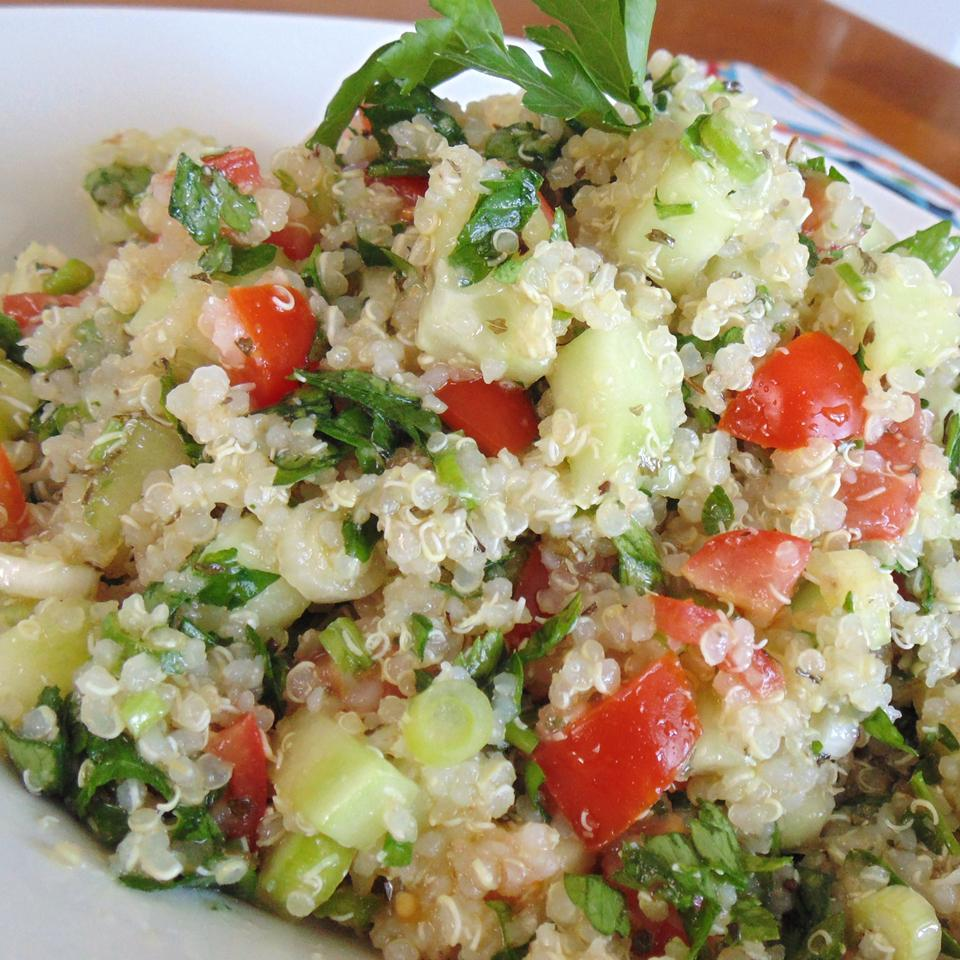

Tabbouleh Quinoa Salad

Cool, refreshing vegetarian salad.
Info
Cook: 15 mins
Additional: 1 hr
Total: 1 hr 40 mins
Prep: 25 mins
Servings: 12
Ingredients
- 2 cups vegetable broth
- 1 cup of Quinoa
- 1 cucumber
- 2 tomatoes
- 1 cup of fresh parsley
- 2 green onions
- 2 tablespoons fresh mint
- 2 garlic cloves, minced/li>
- 1/4 cup of olive oil
- 1/4 cup of lemon juice
- 1 teaspoon of salt
Directions
- Bring broth and quinoa to a boil in a saucepan.
Reduce heat to medium-low, cover, and simmer
until quinoa is tender and water has been
absorbed, about 15 minutes.
- Combine cucumber, tomatoes, parsley, green
onions, mint, and garlic in a large bowl.
Add quinoa, olive oil, lemon juice, and salt
to cucumber mixture; toss to combine. Cover the
bowl with plastic wrap and refrigerate until
flavors combine, at least 1 hour.